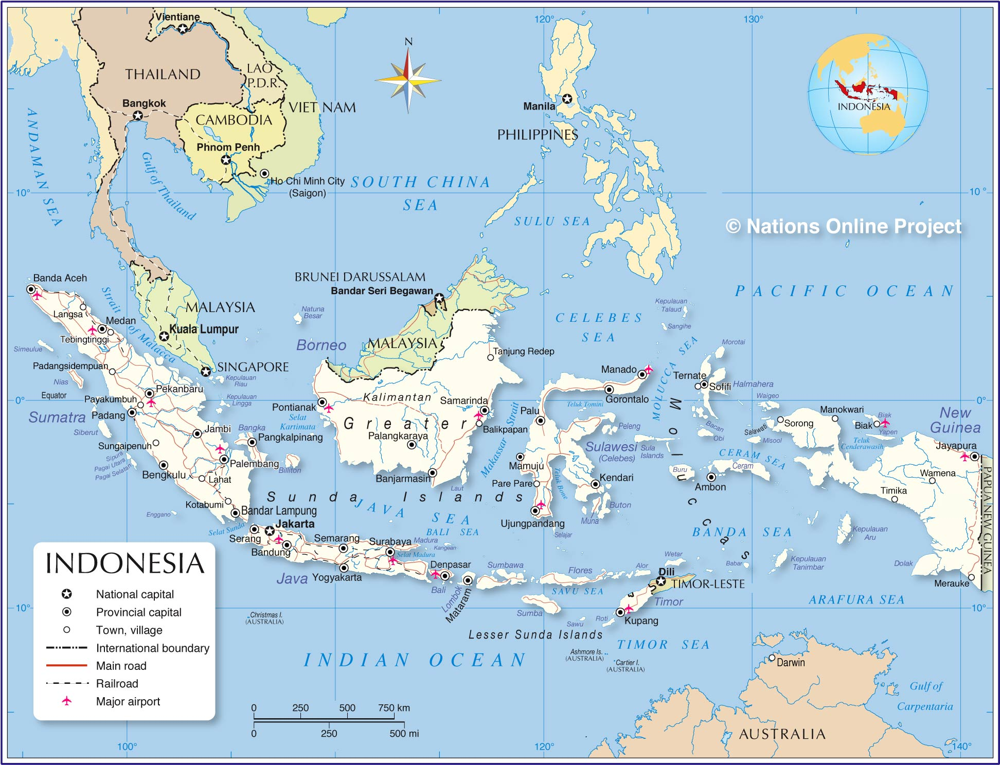
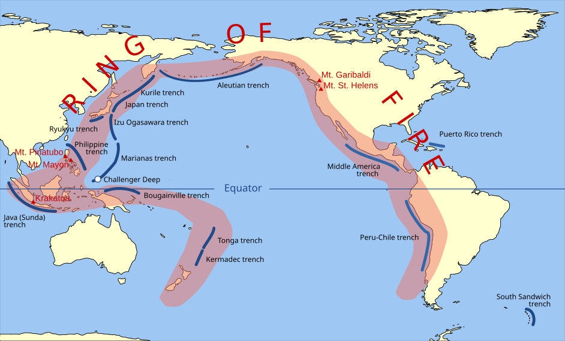
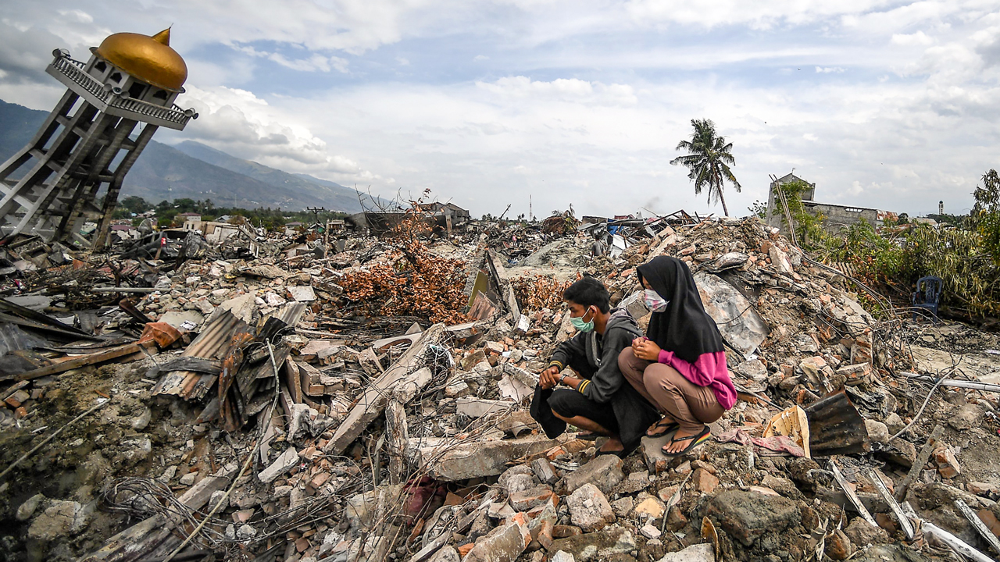
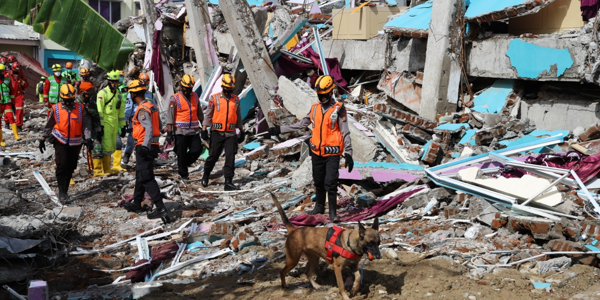

Natural Disasters in Indonesia
環太平洋火山帶 (Huán Tàipíngyáng huǒshān dài — Ring of Fire) 與政府應對
中文課報告
今天我會解釋三個重點 (zhòngdiǎn — key points)：
最後，我會分享我自己的看法 (kànfǎ — viewpoint / opinion)。
Geographical Location
位於東南亞 (Dōngnányà — Southeast Asia)
在印度洋 (Yìndùyáng — Indian Ocean) 跟太平洋 (Tàipíngyáng — Pacific Ocean) 之間
群島 (qúndǎo — archipelago) 國家 — 超過17,000座島嶼 (dǎoyǔ — islands)
從西到東超過5,000公里
≈ London to New York

印尼位於幾個板塊的交界處 (jiāojiè chù — boundary)：
想像三塊巨大的拼圖一直在互相推擠 (tuī jǐ — push against each other)
因為這個獨特 (dútè — unique) 的地理位置，印尼在地質上非常活躍 (huóyuè — active)。
The Ring of Fire
環繞太平洋的巨大馬蹄形 (mǎtí xíng — horseshoe shape) 區域
「環」= 形狀像圓圈圍繞太平洋
「火」= 劇烈的火山活動 (huǒshān huódòng — volcanic activity)
全長大約40,000公里，經過日本、菲律賓、印尼、紐西蘭，還有美洲西海岸

印尼位於地球上地質活動最危險 (wéixiǎn — dangerous) 的區域之一。
這是一個永久性 (yǒngjiǔ xìng — permanent) 的地理現實，不是可以避免或改變的。
Why Disasters Happen — Deep Dive
板塊碰撞 → 一個板塊被推到另一個下面
= 隱沒作用 (yǐnmò zuòyòng — subduction)
地底高溫 → 岩石融化 → 岩漿 (yánjiāng — magma) 上升 → 火山爆發
有名的火山：
梅拉皮火山
(Méilāpí — Mt. Merapi)
喀拉喀托火山
(Kālākātuō — Krakatoa)
錫納朋火山
(Xīnàpéng — Mt. Sinabung)
板塊一直在移動 (yídòng — move) —— 一年只有幾公分
卡住 → 突然釋放 (shìfàng — release) → 巨大能量 (néngliàng — energy)
= 地震波 (dìzhèn bō — seismic waves)
2004年：蘇門答臘 (Sūménddálà — Sumatra) 規模9.1大地震
人類歷史上最強烈的地震之一

海底地震 → 推動大量海水 → 靠近海岸時可以超過10公尺高
2004年 印度洋海嘯 (Yìndùyáng hǎixiào — Indian Ocean Tsunami)
超過230,000人死亡
亞齊省 (Yàqí shěng — Aceh province) 遭受毀滅性 (huǐmiè xìng — devastating) 破壞
2018年：海嘯襲擊蘇拉威西島 (Sūlāwēixī dǎo — Sulawesi) 的帕盧市 (Pàlú shì — Palu city)
Government Response
安裝深海浮標 (shēnhǎi fúbiāo — deep-ocean buoy) 和地震監測站 (dìzhèn jiāncè zhàn — seismic monitoring station)
機構：BMKG — 氣象氣候與地球物理局
學校進行避難演練 (bìnàn yǎnliàn — evacuation drill)
口號：「趴下、掩護、抓穩」
pā xià, yǎnhù, zhuā wěn — Drop, Cover, Hold On
BNPB — 國家災害防治署 (Guójiā Zāihài Fángzhì Shǔ)
協調救援、醫療援助、食物和水、臨時避難所
蓋抗震建築 (kàng zhèn jiànzhù — earthquake-resistant building)
居民從高風險地區遷移 (qiānyí — relocate)
與聯合國 (Liánhéguó — United Nations)、日本、澳洲合作
改善災害防備能力 (zāihài fángbèi nénglì — disaster preparedness)

My Opinion
把更好的科技、更安全的基礎建設和一個有準備的社會結合在一起， 才是減少自然災害衝擊 (chōngjí — impact) 的最有效方法。
Conclusion
印尼位於三個板塊的交界處，是環太平洋火山帶的一部分 → 非常容易受到自然災害的影響
地震、火山爆發和海嘯不是隨機事件 — 是地質條件 (dìzhì tiáojiàn — geological conditions) 的直接結果
政府在預警、教育和救援方面已做出重要努力 (nǔlì — effort)，但仍有很大的進步空間 (jìnbù kōngjiān — room for improvement)
了解這些挑戰 (tiǎozhàn — challenge) → 建立更安全、更有準備的社會
| 中文 | 拼音 Pīnyīn | English |
|---|---|---|
| 自然災害 | zìrán zāihài | natural disaster |
| 環太平洋火山帶 | Huán Tàipíngyáng huǒshān dài | Ring of Fire |
| 板塊 | bǎnkuài | tectonic plate |
| 地震 | dìzhèn | earthquake |
| 火山爆發 | huǒshān bàofā | volcanic eruption |
| 海嘯 | hǎixiào | tsunami |
| 隱沒作用 | yǐnmò zuòyòng | subduction |
| 岩漿 | yánjiāng | magma |
| 群島 | qúndǎo | archipelago |
| 預警系統 | yùjǐng xìtǒng | early warning system |
| 避難演練 | bìnàn yǎnliàn | evacuation drill |
| 抗震建築 | kàng zhèn jiànzhù | earthquake-resistant building |
| 基礎建設 | jīchǔ jiànshè | infrastructure |
| 防災 | fángzāi | disaster prevention |
| 偏遠地區 | piānyuǎn dìqū | remote area |
| 加固 | jiāgù | retrofitting |
Thank you for listening
Xièxiè dàjiā de shōutīng